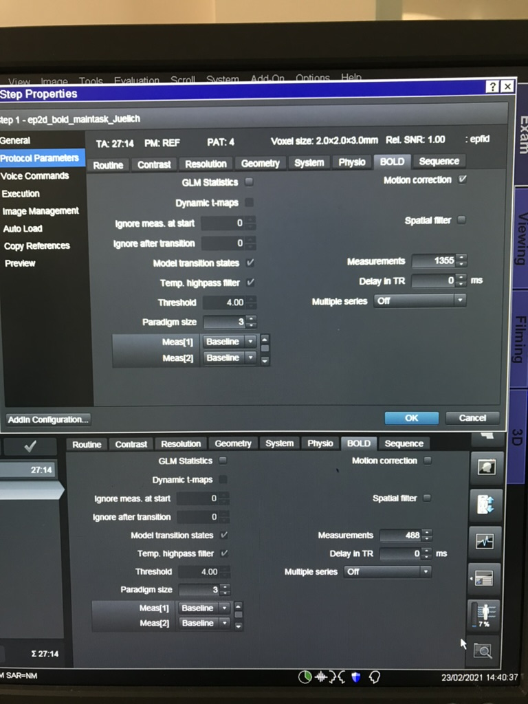
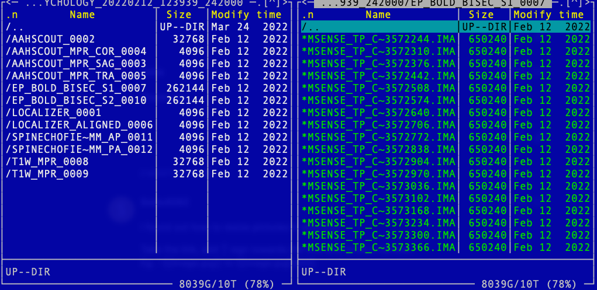
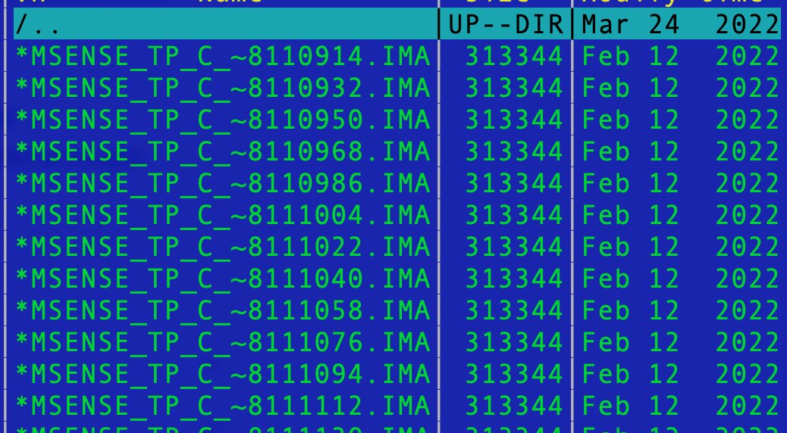
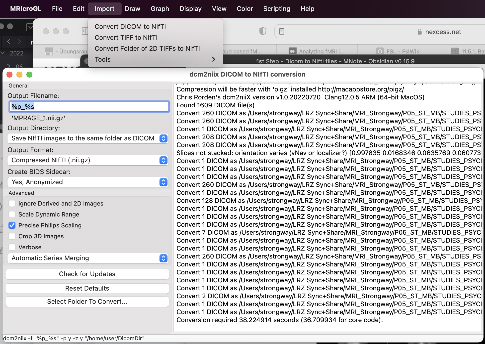

2.1.1 MRI sequence
Types of MRI data depend on what MRI sequence you use. An MRI sequence is a number of radiofrequency pulses and gradients that result in a set of images with a particular appearance. For example, here is a property from the EPI bold sequence that we use.

For each experiment, we may use multiple sequences, such as resting state, T1 structure, EP2d Bold, etc. Running each sequence will generate images in a separate subfolder in your study folder, with the sub-folder name indicating the sequence. Below is one example from one sample data from Cemre’s study. Can you guess what sequences have been used?

From the protocol, you will guess the sequence of that folder. For example, T1W_MPR_* are T1 scanning. EP_BOLD_BISEC_S* are fMRI BOLD signals for the task bisection (two sessions). The foldder name is a combination of protocol _ task _ serialNo.
Within each folder, it stores individual DICOM images, like this: 
DICOM stands for Digital Imaging and Communications in Medicine. Each image contain independent meta information, which is actually redundant for our purpose. If you run scan 1000 times, you will have 1000 DICOM files in that folder. To better organize your data, it is better convert DICOM data to Nifti file - a single file for each run.
2.1.2 DICOM to Nifti converter
When you copy data from an MRI computer, all files are stored in DICOM format, with each image (single scan) as a single file. After you run one session of the experiment, you probably get about two to three thousand files. It would be wise to first convert your files to nifti format (*.nii.gz).
One handy commandline tool for this job is dcm2nii DICOM to NIfTI converter. If you want to use the GUI version, another useful tool is MRIcroGL. MRIcroGL is a medical image viewer that allows you to load overlays (e.g., statistical maps), draw regions of interest.
With MRIcroGL open, click menu Import - Convert DICOM to NIfTI, it will pop up dcm2niix converter page. Specify filename rules, store location, and other settings, you can quickly convert DICOM to NIfTI.

Two important parameters for naming rules is %p and %s, represent the protocol and series number respectively. This essentially is the folder name.
The DICOM files in each folder will be converted to two files:
- one json file, which stores image information.
- Here is one example of json file: rfMRI_REST_PA_6.json
- one NIfTI file (*.nii or *.nii.gz).
Converting DICOM to NIFTI can make your raw data tidy, but not necessary save your space. When you have multiple sequences and multiple participants, it is wise to organize your data folder in a standard structure. A common standard structure that is accepted by multiple analysis software (e.g., fMRIprep) is BIDS. We will discuss this in next chapter.
Heudiconv
heudiconv is a flexible DICOM converter for organizing brain imaging data into structured directory layouts.
- It allows flexible directory layouts and naming schemes through customizable heuristics implementations.
- It only converts the necessary DICOMs and ignores everything else in a directory.
- You can keep links to DICOM files in the participant layout.
- Using dcm2niix under the hood, it’s fast.
- It can track the provenance of the conversion from DICOM to NIfTI in W3C PROV format.
- It provides assistance in converting to BIDS.
- It integrates with DataLad to place converted and original data under git/git-annex version control while automatically annotating files with sensitive information (e.g., non-defaced anatomicals, etc).

If you want to install in your local computer, one way is to use Docker, see instruction here
heudiconv comes with existing heuristics which can be used as is, or as examples. For instance, the Heuristic convertall extracts standard metadata from all matching DICOMs. heudiconv creates mapping files, <something>.edit.text which lets researchers simply establish their own conversion mapping.
Having decided on a heuristic, you could use the command line (see detailed Usage):
heudiconv -f HEURISTIC-FILE-OR-NAME -o OUTPUT-PATH --files INPUT-PATHsTutorials
Step 0. Check the raw folders
Check each participant, each folder, remove those unfinished sessions (or those repeated sessions).
Step 1. Create a heuristic file
heudiconv --files raw/sub01/*/*/*.IMA -o Nifti/ -f convertall -s 01 -c noneThis will create a skeleton in the Nifiti/.heudiconv hidden directory. In that directory, you will find a skeleton heuristic.py and dicominfo.tsv.
Copy out the heuristic.py and dicominfo.tsv. These are two files we need to use to modify conversion rules.
Step 2. Modify Heuristic
Session 1: Create keys in infotodict, such as
t1w = create_key('sub-{subject}/anat/sub-{subject}_T1w')
task1 = create_key('sub-{subject}/func/sub-{subject}_task-learning_run-1_bold')
task2 = create_key('sub-{subject}/func/sub-{subject}_task-learning_run-2_bold')
info: dict[tuple[str, tuple[str, ...], None], list[str]] = {t1w: [], task1: [],
task2: []}Session 2: check dicominfo.tsv find the pattern and add inside the for loop:
for s in seqinfo:
if (s.protocol_name == 'T1w_MPR') and ('NORM' in s.image_type):
info[t1w] = [s.series_id] # folder name is the series_id
if (s.protocol_name == 'ep_bold_mb4_task1'):
info[task1]=[s.series_id]
if (s.protocol_name == 'ep_bold_mb4_task2'):
info[task2]=[s.series_id]
return info
Step 3. Conversion
heudiconv --files dicom/{subject}/*/*.ima -o Nifti/ -f Nifti/code/heuristic.py -s 219 -ss itbs -c dcm2niix -b --minmeta --overwriteI would suggest to write a bash script to convert the file. Here is one example:
#!/bin/bash
# subjects array
subs=("SS14_014" "SS20_034" "DS11_032" "DS18_034" "SS05_017" "SS15_007")
# set project folder
proj_dir=/dss/lu32pog/zhangbei_2020/study2
# loop through each subject
for subj in ${subs[@]}; do
echo $subj
# use the first two letters and last three letters from subj to create subid
subid=${subj:0:2}${subj: -3}
# using heduiconv
heudiconv --files ${proj_dir}/raw_data/${subj}/*/*/*.IMA -o ${proj_dir}/Nifti \
-f ${proj_dir}/Nifti/code/heuristic.py -s $subid -c dcm2niix -b --minmeta --overwrite
doneOfficial tutorials can be found here.
Step 4. Compress raw data
Given raw data include lots of small files, which will eventually explode our data science storage, not because of the size, but because of the limited number of files we can store (maximum: 8 million). I suggest to put the following bash code (file) to your raw folder to compress individual subfolders.
#!/bin/bash
# Get a list of all subdirectories in the current directory
for dir in */ ; do
# Remove the trailing slash to get the directory name
dir_name=${dir%/}
# Compress the directory into a tar.gz file with the same name
tar -czvf "${dir_name}.tar.gz" "${dir_name}"
done
echo "All subfolders have been compressed."After the compression, you can safely remove subfolders. You can modify the above script to do this.
What not compress all subject data together
In principle you can also compress all subject data to one single tar.gz file. However, I would recommend compressing individual participants, as we may want to convert or do further things with individual data. If you compress all data together, unzipping the whole dataset may take more time (prob. minutes to hours), and you have to expand all files. Even though there is a way to extract partial data, extracting folder structure from a huge zip file takes time. Trust me.